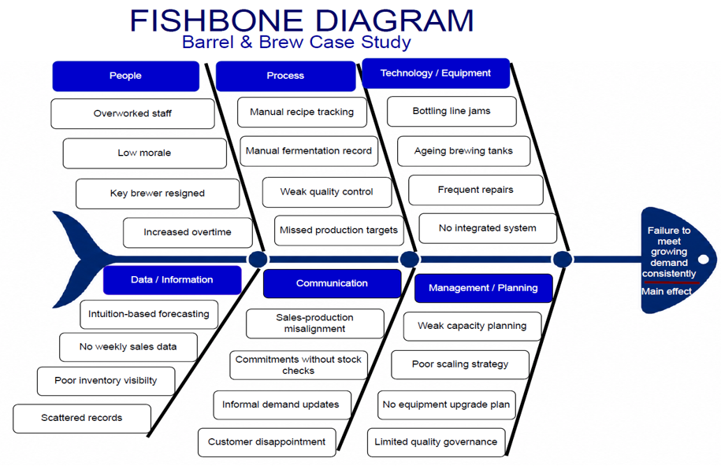

Current-State Process Map
The current process relies on handwritten recipe records, manual fermentation tracking, taste-based quality checks, manual bottle counts, and spreadsheet-based inventory updates.

A Business Analysis capstone project focused on replacing manual brewery operations with an integrated ERP solution for forecasting, production planning, inventory management, quality control, and reporting.
Barrel & Brew experienced rapid growth after its products expanded into 500+ local restaurants. This growth exposed operational weaknesses including manual processes, inventory shortages, quality inconsistencies, production delays, excessive overtime, equipment failures, and poor communication between sales and production.
The current process relies on handwritten recipe records, manual fermentation tracking, taste-based quality checks, manual bottle counts, and spreadsheet-based inventory updates.
The fishbone diagram identifies operational causes across people, process, technology, data, communication, and management planning.

The future-state process introduces ERP-driven forecasting, inventory validation, digital production orders, real-time monitoring, quality checkpoints, and automated inventory updates.

View the complete Business Requirements Document, including the full gap analysis, requirements matrix, non-functional requirements, user acceptance criteria, and approval section.